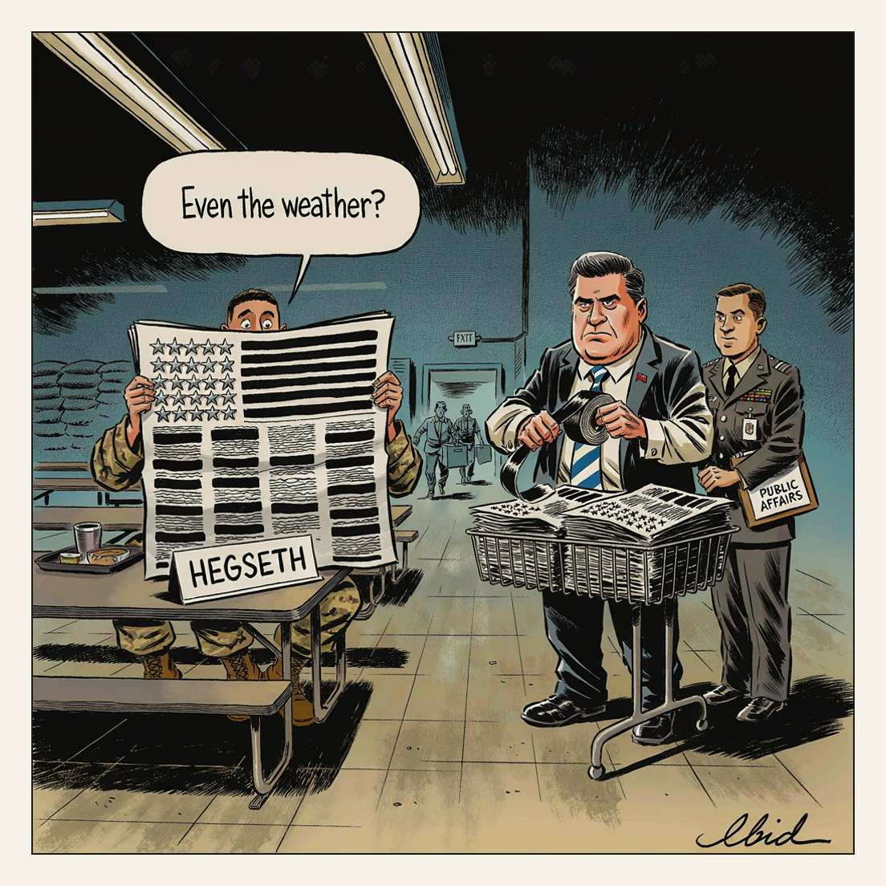

Cleared for release.
Stars Retained

The Pentagon dismissed Stars and Stripes' top editor and publisher and fired one of the newspaper's reporters. AP reported the removals followed the journalists' objections to military interference in the paper's coverage. Stars and Stripes is funded by the Defense Department but has long operated under a guarantee of editorial independence from the chain of command it covers.